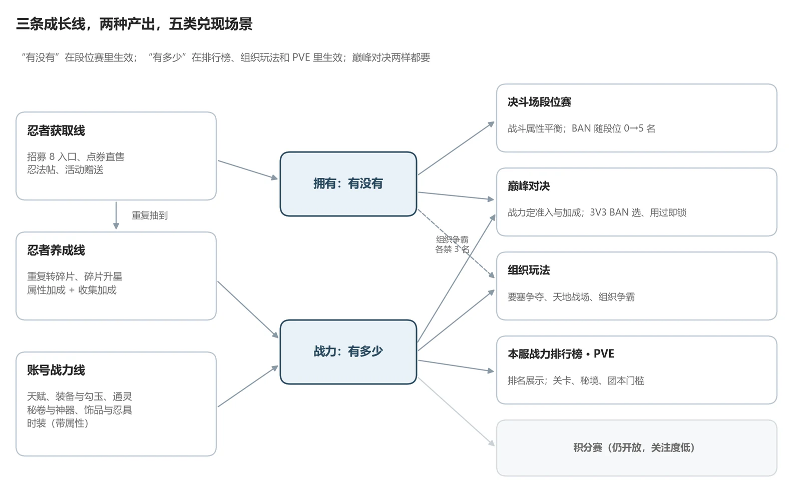
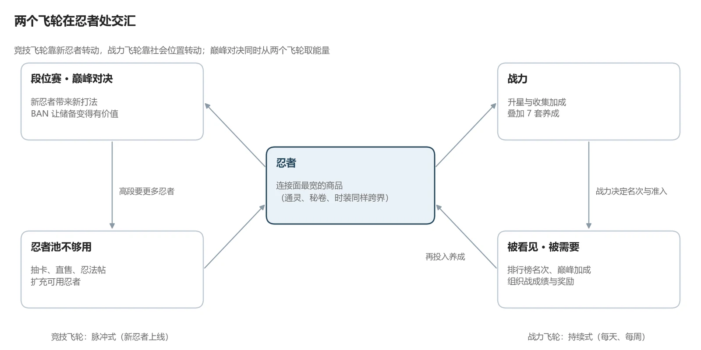

×00
01
格鬥遊戲靠公平留人，免費遊戲靠付費帶來的優勢賺錢。火影沒有在全域性選邊，而是讓兩種公平觀按玩法共存：決鬥場段位賽遮蔽戰鬥屬性，比操作和忍者儲備；賬號戰力在個人排行榜、組織玩法和巔峰對決裡兌現。
02
忍者獲取、忍者養成、賬號戰力三條線，產出“有沒有”和“有多少”兩樣東西。段位賽只認“有沒有”，排行榜和組織玩法認“有多少”，巔峰對決兩樣都要。

| 玩法 | 時間 | 與戰力、忍者池相關的規則 |
|---|---|---|
| 本服戰力排行榜 | 常駐 | 展示個人排名；巔峰預選賽中戰力前 5 額外獲得 30% / 20% / 10% 積分加成 |
| 巔峰對決 | 每 5 週一屆，週五本服、週六跨服 | 戰力過低不能發起挑戰；3V3 先 BAN 後選，用過的 S/A/B 忍者不能再上；棄權時戰力高者晉級 |
| 要塞爭奪戰 | 週六 20:00–20:30 | 連勝越多積分越高；組織積分決定要塞歸屬 |
| 天地戰場 | 週三 21:00 | 當日祈福滿 10 人才有資格；隨機“推薦忍者”出戰獲得攻擊提升 |
| 組織爭霸賽 | 按屆開賽 | 報名看組織戰力前 16；車輪戰，雙方各禁 3 名忍者 |
規則取自 2026 年 11 月的遊戲內說明頁。積分賽關注度低是作者所在伺服器的觀察，不代表所有伺服器。
03
同為 S 忍，兩條獲取路線按面值相差約 25 倍。比較時要把面值、現金、時間和風險分開看，否則就會把兩種支付方式誤讀成同一商品的價格歧視。
| 成本維度 | 高階招募 | 傳說版忍法帖 |
|---|---|---|
| 面值 | 約 300 抽 × 168 金幣，約 5040 元 | 1980 點券，198 元 |
| 實際現金缺口 | 扣除存量金幣、召集券和免費產出後才知道，可能遠低於面值 | 扣除點券餘額；靠月充積累時，四次 50 元正好覆蓋 |
| 日曆時間 | 取決於金幣積累速度和抽取運氣 | 需要一季活躍升到獎勵等級，或用點券補級 |
| 風險與附贈 | 抽數隨機；途中獲得其他碎片和材料 | 獎勵固定，但只能拿當季指定忍者 |
04
每條結論寫成一條鏈：哪條規則 → 玩家因此怎麼做 → 產生什麼情緒 → 服務哪個目的。全文共 14 條，這裡列 6 條；行為和體驗兩列缺少後臺資料，屬於機制推斷。
| 機制 M | 動態 D | 體驗 A | 目的 |
|---|---|---|---|
| 段位賽戰鬥屬性平衡 | 競技投入集中在操作和忍者選擇上 | 挑戰：輸贏更多歸因於自己 | 公平 |
| 本服戰力排行榜；巔峰預選前 5 積分加成 | 戰力玩家盯名次，臨近名次線時追加養成 | 成就：被全服看見 | 變現、留存 |
| 組織玩法的准入：組織等級、祈福 10 人、入組織時長 | 成員互相提醒祈福、按時出勤 | 社交：被隊友需要，也有出勤壓力 | 留存 |
| 巔峰對決：戰力定準入，3V3 BAN 選，用過即鎖 | 同一批玩家同時準備戰力、操作和忍者池 | 高光與伺服器榮譽 | 變現、留存 |
| 等級 + 魔抗雙門檻，魔抗每檔 +10% | 等級夠了卡屬性，玩家尋找瓶頸材料 | 挑戰，或者焦慮 | 變現、控速 |
| 點券直售、限時上架與限購 | 目標明確的玩家在下架前購買；未付費者只能在對局裡面對它們 | 持有者的獨佔感，未持有者的剝奪感 | 變現（與公平有張力） |

05
先做改動小、能先驗證問題是否存在的方案，再做影響資源產出的方案。三條方案都不碰“點券忍者需要付費獲得”這條付費牆本身，只處理它帶來的資訊和體驗成本。
| 優先順序 | 方案 | 解決的問題 | 主要風險 |
|---|---|---|---|
| ① | 高階招募的規則與預算資訊透明化 | 玩家分不清類別碎片機率、十連保證和整卡成本；同一遊戲裡祈願奪寶已實時顯示幸運值 | 部分玩家吃到確定獎勵就停，單期流水可能下降 |
| ② | 為未持有的付費忍者提供訓練體驗 | 沒有這個忍者，也就沒機會練習應對 | 降低新鮮感，可能推遲購買 |
| ③ | 面向迴流玩家的定向追趕 | 多套養成逐年疊加，老服迴流玩家差距過大 | 老玩家覺得不公平，補貼可能流向非目標用途 |
| 監測 | 高段 BAN 的儲備壓力；指定忍者的場景准入時長 | 儲備不足的玩家在高段可能無人可用 | — |
方案①分兩步驗證。先做小規模可用性測試，看玩家能否區分類別碎片機率與整卡機率、能否判斷已有預算是否覆蓋某個確定獎勵；之後才看線上的諮詢量和按預算分層的消費變化，並把總流水變化拆成提前消費、延後消費和實際增減。只有規則確實存在整卡硬保底時才顯示整卡進度，不把玩家經驗值做成保證。
追趕方案要按“目標在移動”來算：追趕時間約為 T = D ÷ (a − b)，D 是初始差距，a 是玩家每日有效成長，b 是目標每日增長，只有 a > b 才能追上。補貼只投向已識別的瓶頸材料。
06
07
全文 45 頁，含 21 張實機截圖、3 張分析圖、36 張表和資料來源，在下面直接翻閱。